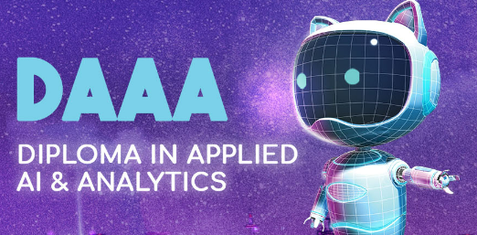
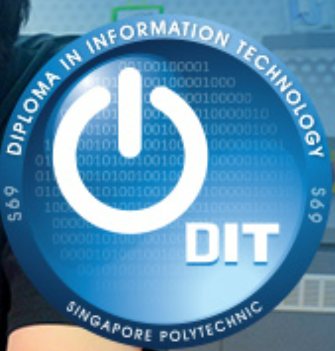

My Experience At SP
My experience at SP has been nothing short of enriching and exciting. Although it has only been around 3 months since I started my course, I have learnt so many new things. I feel that though the pace is quite fast, all the new skills and knowledge that I have learnt keep me on my toes and I feel motivated to keep going and learn as much as I can.
DISM
The Diploma in Infocomm Security Management (DISM) aims to equip students with the skills to work in the digital security sector. This diploma covers everything a cybersecurity professional should know from offensive and defensive methods to investigative skills. To prepare students for work in the industry, key areas of security technology, security management, infocomm technology, law and teamwork and communication are covered in the DISM curriculum. SP has its own Cyber Wargame Centre where students can experience realistic scenarios to prepare themselves for the real cyber threats in the world. Being a DISM student at SP also gives students an extra edge by getting recognised by the industry through professional industry certifications.
For more information about this course, please click here.
DAAA
The Diploma in Applied AI & Analytics (DAAA) aims to equip students with the skills to develop AI applications that can be used in their everyday lives. By taking DAAA, students can pursue careers such as data analyst, data engineer or an AI practitioner to create solutions for many real-world problems. This course has many highlights such as an Industry now curriculum and state of the art AI facilities, including high performing computers and with AI Deep Learning servers capable of handling heavy lifting machine learning task.
For more information about this course, please click here.
DIT
The Diploma in Information Technology aims to develop students to become professionals in the IT sector. DIT focuses on Software and Application development with three main specialist tracks: Software Development, User Experience and Immersive Simulation. This course has many highlights such as an industry-certified curriculum and many opportunities to work with leading companies such as Microsoft, Singtel, DBS and more.
For more information about this course, please click here.
